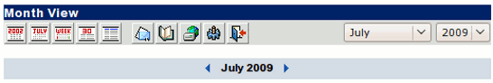
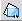
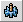

| The calendar toolbar works similarly to the main toolbar, but it customizes the calendar for you.
The Calendar Toolbar:

Reference Chart:
| Term/Icon |
Name/Alternate Text |
Action It Performs |
 | View By Year | Displays the current yearly calendar. |
|
| View By Month | Displays the current monthly calendar. |
|
| View By Week | Displays the current weekly calendar. |
 | View By Day | Displays the current daily calendar. |
|
Listview
|
Displays all the calendar items in a year as a list.
|
|
 | Back to Inbox | Takes you back to the Inbox. |

|
Address Book
|
Opens the address book for editing. |
|
Webdisk
|
Opens your file storage. |

|
User Preferences
|
Allows you to alter and personalize your settings. |
|
| Logout | Exits OpenWebMail. |
You can also change the year, which will display the dates
accordingly. Simply click within the drop menu where it says "2009",
and change it to the desired year. The month, days, weeks, and events
will now be changed according to that year. The same you can do with
the month in the "month" field. You can also use the Left ( ) and Right
() arrows, just below the toolbar, for that. ) and Right
() arrows, just below the toolbar, for that.
You can find out more about using the Calendar
Here.
|